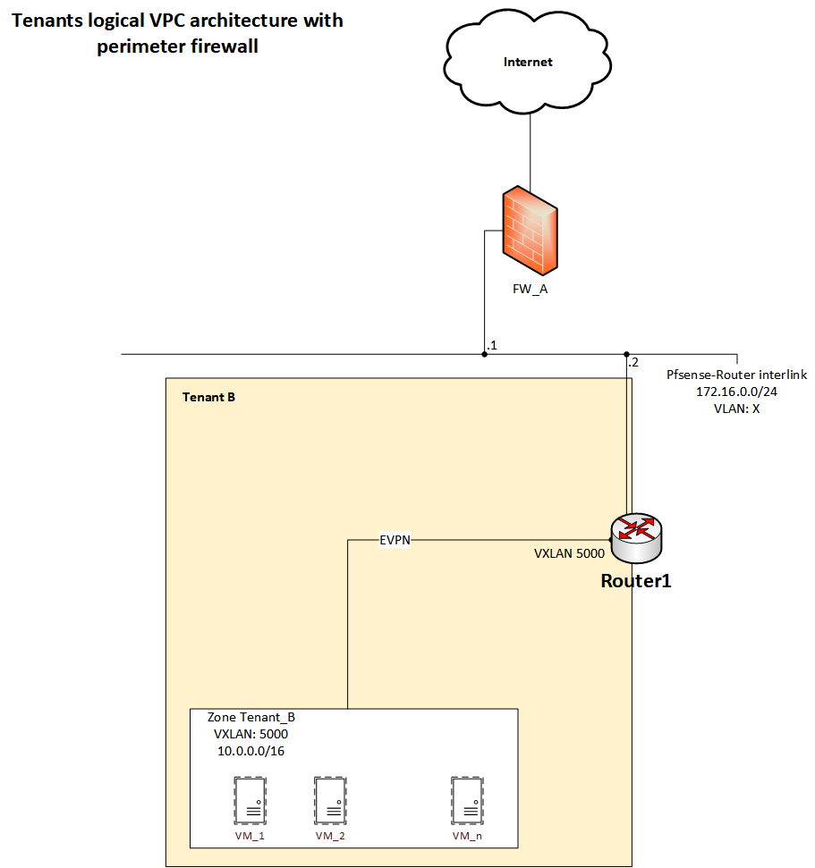

Purpose and context:
Like "every IT nerd" guy (and not only IT), we encourage ourselves to build and deploy a Home Lab where we can explore, test and develop things.
Depending on each one of us, each Home Lab has certain specifications and characteristics, providing also different kind of services belonging to different categories.
My Home Lab is more focused in infrastructure services, and I use it to understand better network, storage and compute.
It is served by one Proxmox server, installed also with a SDN (Software Defined Network) package, that allows me to scale more at the network level (beyond the VLANs limitations).
At this time, I only use local attached storage, suported by a nvme disk.
I setup this environment, with the help a VyOS router (Router1) and a Pfsense firewall, to behave like a multi-tenant environment, where I can use duplicated IP address space and a perimeter firewall for internet access.
A description and an image of this setup are below.
Each tenant has its own address space (by default: 10.0.0.0/16) and is isolated by a Zone (configured in the Proxmox SDN). Tenant VNETs are created based on the workloads requirements and belongs to only one Zone. Configuring a Zone creates a VRF in Proxmox server.
Each tenant has a dedicated perimeter firewall, which already mentioned is Pfsense. The perimeter firewall allows the tenant to configure north-south firewall rules, IPSec tunnels and NAT for internet access (besides other features).
Logical Topology:

Below also the VyOS Router1 issued commands:
#configures the management vrf for router access
set vrf name management
set vrf name management table 100
set interfaces ethernet eth0 vrf management
set interfaces ethernet eth0 address 192.168.2.150/24
set service ssh vrf management
set system host-name router1
#configures the interfaces eth2 with in the same subnet of Proxmox VTEPs
set interfaces ethernet eth2 address 10.0.1.1/24
set interfaces ethernet eth2 description 'proxmox nodes'
set interfaces ethernet eth2 mtu 1600
#configures the BGP general settings, adding the Proxmox to BGP peer group
set protocols bgp address-family l2vpn-evpn advertise ipv4 unicast
set protocols bgp address-family l2vpn-evpn advertise-all-vni
set protocols bgp system-as 65003
set protocols bgp neighbor 10.0.1.2 peer-group ibgp
set protocols bgp parameters log-neighbor-changes
set protocols bgp peer-group ibgp address-family l2vpn-evpn
set protocols bgp peer-group ibgp remote-as 65003
set protocols bgp peer-group ibgp update-source eth2
#set the VXLAN interface for TenantB
#(the VXLAN ID should be the same ID of the VRF-VXLAN from Zone)
set interfaces vxlan vxlan5000 mtu 1550
set interfaces vxlan vxlan5000 parameters nolearning
set interfaces vxlan vxlan5000 port 4789
set interfaces vxlan vxlan5000 source-address 10.0.1.1
set interfaces vxlan vxlan5000 vni 5000
#creates the Tenant B VRF
set vrf name tenantB protocols bgp address-family l2vpn-evpn advertise ipv4 unicast
set vrf name tenantB protocols bgp system-as 65003
set vrf name tenantB protocols bgp address-family ipv4-unicast redistribute static
set vrf name tenantB table 5000
set vrf name tenantB vni 5000
#adds the static route to internet
set vrf name tenantB protocols static route 0.0.0.0/0 next-hop 172.16.0.1
#creates the necessary bridge
set interfaces bridge br5000 description tenantB
set interfaces bridge br5000 member interface vxlan5000
set interfaces bridge br5000 vrf tenantB
#set the pseudo interfaces to tenantB tenant with VLAN 4 to access to pfsense
set interfaces pseudo-ethernet peth1 source-interface eth1
set interfaces pseudo-ethernet peth1 vif 4
set interfaces pseudo-ethernet peth1 vif 4 description PseuIntTenantB
set interfaces pseudo-ethernet peth1 vif 4 address 172.16.0.2/24
set interfaces pseudo-ethernet peth1 vif 4 vrf tenantB
For future work: I'd like to expand the Tenant infrastructure, enabling two different address spaces of the same tenant to communicate without the need of VPN site-2-site.